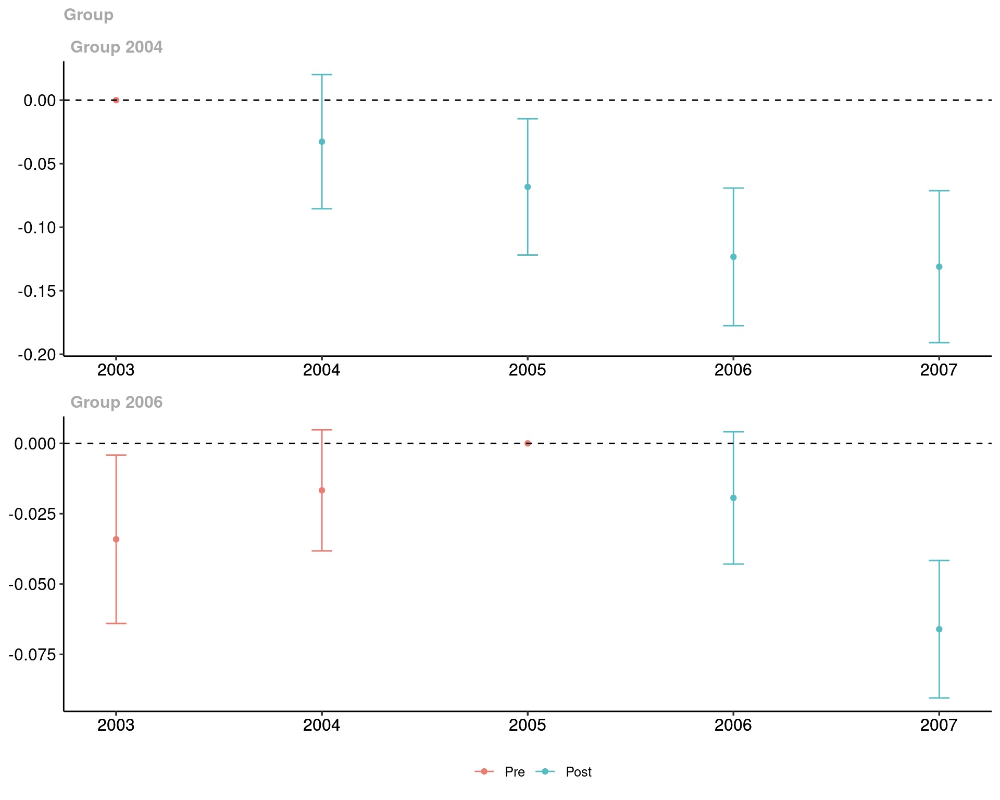
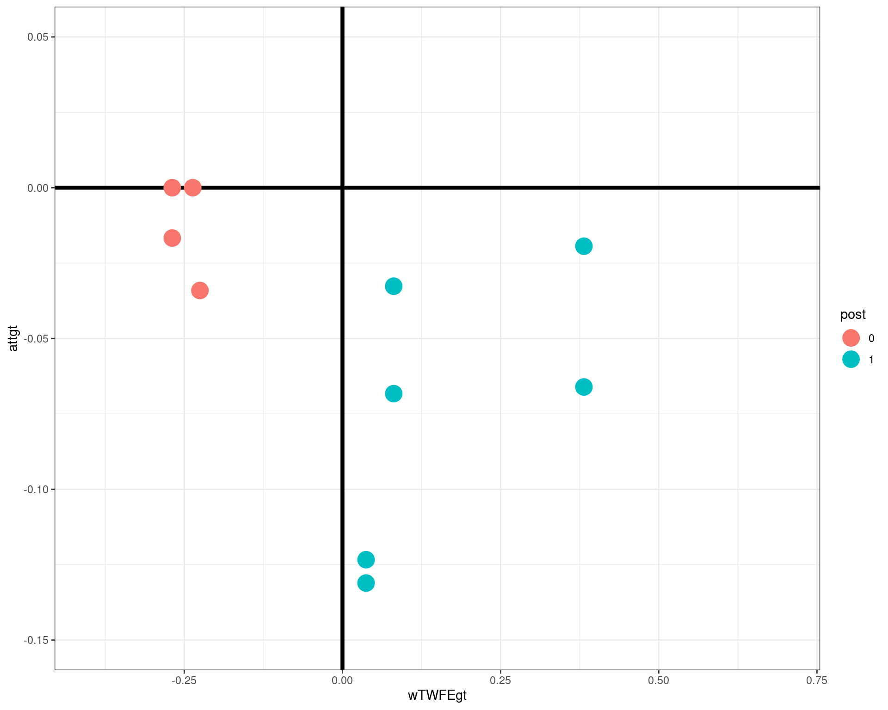
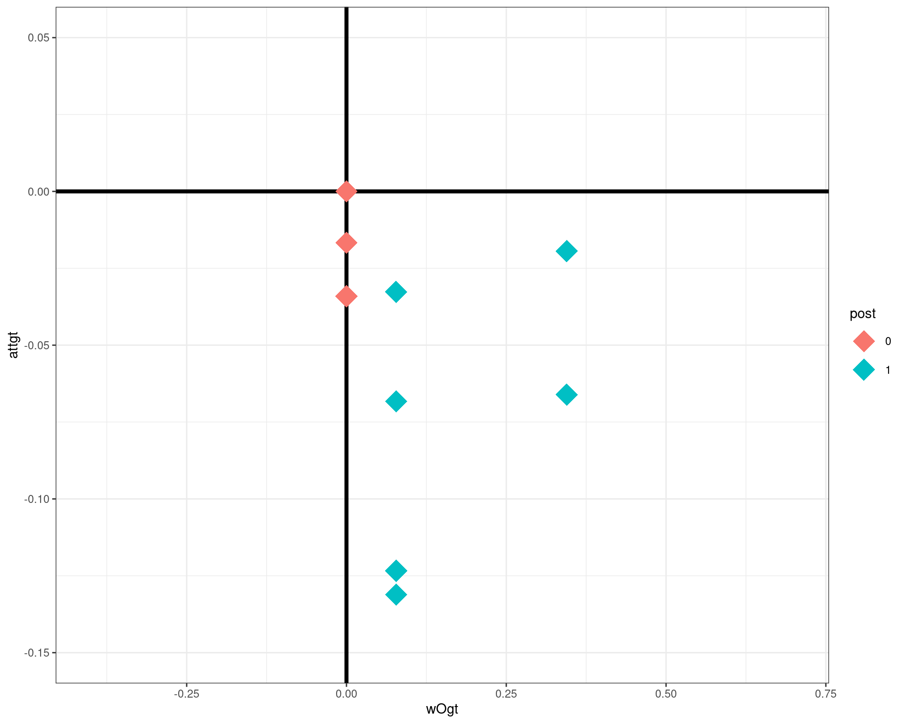

![]()
id year G lemp lpop region
554 8003 2001 2007 5.556828 9.614137 4
555 8003 2002 2007 5.356586 9.623972 4
556 8003 2003 2007 5.389072 9.620859 4
557 8003 2004 2007 5.356586 9.626548 4
558 8003 2005 2007 5.303305 9.637958 4
559 8003 2006 2007 5.342334 9.633056 4Frontiers in Difference-in-Differences
Relaxing Parallel Trends
October 5, 2023
More Complicated Treatment Regimes
The arguments above are fairly easy and well-known.
Most applications, however, involve more complicated settings (more periods, more complicated treatment regimes, etc.)
One of the most active areas in causal inference with panel data in the past few years has been to these more “realistic” settings
A lot of these advancements have been in a DID framework (so I will emphasize this below)
However, I think that a lot of the same insights apply to other identification strategies as well
I’ll make the case that you can just “substitute in”, say, LO unconfoundedness in the “first step” for parallel trends, and a lot of the same arguments go through
If we have time, I’ll argue that you can use other identification strategies in the “first step” such as interactive fixed effects models and change-in-changes
The first more complicated treatment regime that we’ll discuss is staggered treatment adoption
Setup w/ Staggered Treatment Adoption
- \(\mathcal{T}\) time periods
Units can become treated at different points in time
staggered treatment adoption: Once a unit becomes treated they remain treated.
\(D_{it}\) - treatment indicator. In math, staggered treatment adoption means: \(D_{it-1}=1 \implies D_{it}=1\).
\(G_i\) - a unit’s group - the time period that unit becomes treated. Also, define \(U_i=1\) for never-treated units and \(U_i=0\) otherwise.
Examples:
Government policies that roll out in different locations at different times (minimum wage is close to this over short time horizons)
“Scarring” treatments: e.g., job displacement does not typically happen year after year, but rather labor economists think of being displaced as changing a person’s “state” (the treatment is more like: has a person ever been displaced)
Setup w/ Staggered Treatment Adoption
- Potential outcomes: \(Y_{it}(g)\) - the outcome that unit \(i\) would experience in time period \(t\) if they became treated in period \(g\).
- Untreated potential outcome: \(Y_{it}(0)\) - the outcome unit \(i\) would experience in time period \(t\) if they did not participate in the treatment in any period.
- Observed outcome: \(Y_{it}=Y_{it}(G_i)\)
- No anticipation condition: \(Y_{it} = Y_{it}(0)\) for all \(t < G_i\) (pre-treatment periods for unit \(i\))
Unit-Level Treatment Effects
Unit-level treatment effect \[\tau_{it}(g) = Y_{it}(g) - Y_{it}(0)\]
Average treatment effect for unit \(i\) (across time periods): \[\bar{\tau}_i(g) = \frac{1}{\mathcal{T} - g + 1} \sum_{t=g}^{\mathcal{T}} \tau_{it}(g)\]
Target Parameters
- Group-time average treatment effects \[\begin{align*} ATT(g,t) = \E[ \tau_{it}(G) | G=g] \end{align*}\] Explanation: \(ATT\) for group \(g\) in time period \(t\)
Event Study \[\begin{align*} ATT^{ES}(e) = \E[\tau_{i,g+e}(G) | G \in \mathcal{G}_e] \end{align*}\] where \(\mathcal{G}_e\) is the set of groups observed to have experienced the treatment for \(e\) periods at some point.
Explanation: \(ATT\) when units have been treated for \(e\) periods
- Overall ATT \[\begin{align*} ATT^O = \E[\bar{\tau}_i(G) | U=0] \end{align*}\] Explanation: \(ATT\) across all units that every participate in the treatment
Target Parameters
To understand the discussion later, it is also helpful to think of \(ATT(g,t)\) as a building block for the other parameters discussed above.
Notice that:
\[\begin{align*} ATT^{ES}(e) = \sum_{g \in \bar{\mathcal{G}}} w^{ES}(g,e) ATT(g,g+e) \qquad \textrm{ and } \qquad ATT^O = \sum_{g \in \bar{\mathcal{G}}} \sum_{t=g}^{\mathcal{T}} w^O(g,t) ATT(g,t) \end{align*}\] where \[\begin{align*} w^{ES}(g,e) = \indicator{g \in \mathcal{G}_e} \P(G=g|G\in \mathcal{G}_e) \qquad \textrm{and} \qquad w^O(g,t) = \frac{\P(G=g|U=0)}{\mathcal{T}-g+1} \end{align*}\]
In other words, if we can identify/recover \(ATT(g,t)\), then we can proceed to recover \(ATT^{ES}(e)\) and \(ATT^O\).
DID Identification of \(ATT(g,t)\)
Multiple Period Version of Parallel Trends Assumption
For all groups \(g \in \bar{\mathcal{G}}\) (all groups except the never-treated group) and for all time periods \(t=2,\ldots,\mathcal{T}\), \[\begin{align*} \E[\Delta Y_{t}(0) | G=g] = \E[\Delta Y_{t}(0) | U=1] \end{align*}\]
Using very similar arguments as before, can show that \[\begin{align*} ATT(g,t) = \E[Y_t - Y_{g-1} | G=g] - \E[Y_t - Y_{g-1} | U=1] \end{align*}\]
where the main difference is that we use \((g-1)\) as the “base period” (this is the period right before group \(g\) becomes treated).
class: inverse, middle, center count: false
Empirical Example: Minimum Wages and Employment
Example: Minimum Wage
- Use county-level data from 2003-2007 during a period where the federal minimum wage was flat
Exploit minimum wage changes across states
- Any state that increases their minimum wage above the federal minimum wage will be considered as treated
- Interested in the effect of the minimum wage on teen employment
We’ll also make a number of simplifications:
Not worry much about issues like clustered standard errors
Not worry about variation in the amount of the minimum wage change (or whether it keeps changing) across states
Goal: How much do the issues that we have been talking about matter in practice?
Code
Full code is available on my website: https://bcallaway11.github.io/files/presentations/northwestern-causal-inference-workshop or link is on my homepage brantlycallaway.com
R packages used in empirical example
Setup Data
name: twfe-results
TWFE Regression
| (1) | |
|---|---|
| post | −0.038 |
| (0.008) |
\(ATT(g,t)\) (Callaway and Sant’Anna)
term group time estimate std.error
1 ATT(2004,2003) 2004 2003 0.00000000 NA
2 ATT(2004,2004) 2004 2004 -0.03266653 0.020683512
3 ATT(2004,2005) 2004 2005 -0.06827991 0.020984873
4 ATT(2004,2006) 2004 2006 -0.12335404 0.021207710
5 ATT(2004,2007) 2004 2007 -0.13109136 0.023426419
6 ATT(2006,2003) 2006 2003 -0.03408910 0.011720023
7 ATT(2006,2004) 2006 2004 -0.01669977 0.008425207
8 ATT(2006,2005) 2006 2005 0.00000000 NA
9 ATT(2006,2006) 2006 2006 -0.01939335 0.009205517
10 ATT(2006,2007) 2006 2007 -0.06607568 0.009571189Plot \(ATT(g,t)\)’s
Compute \(ATT^O\)
Call:
did::aggte(MP = attgt, type = "group")
Reference: Callaway, Brantly and Pedro H.C. Sant'Anna. "Difference-in-Differences with Multiple Time Periods." Journal of Econometrics, Vol. 225, No. 2, pp. 200-230, 2021. <https://doi.org/10.1016/j.jeconom.2020.12.001>, <https://arxiv.org/abs/1803.09015>
Overall summary of ATT's based on group/cohort aggregation:
ATT Std. Error [ 95% Conf. Int.]
-0.0571 0.0086 -0.0739 -0.0403 *
Group Effects:
Group Estimate Std. Error [95% Simult. Conf. Band]
2004 -0.0888 0.0193 -0.1318 -0.0459 *
2006 -0.0427 0.0078 -0.0602 -0.0253 *
---
Signif. codes: `*' confidence band does not cover 0
Control Group: Never Treated, Anticipation Periods: 0
Estimation Method: Doubly Robustde Chaisemartin and d’Haultfoeuille weights
\(ATT^O\) weights
Weight Comparison

Discussion
To summarize: \(ATT^O = -0.057\) while \(\alpha^{TWFE} = -0.038\). This difference can be fully accounted for
Pre-treatment differences in paths of outcomes across groups: explains about 64% of the difference
Differences in weights applied to the same post-treatment \(ATT(g,t)\): explains about 36% of the difference. [If you apply the post-treatment weights and “zero out” pre-treatment differences, the estimate would be \(-0.050\).]
In my experience: this is fairly representative of how much new DID approaches matter relative to TWFE regressions. It does not seem like “catastrophic failure” of TWFE, but (in my view) these are meaningful differences (and, e.g., given slightly different \(ATT(g,t)\)’s, the difference in the weighting schemes could change the qualitative results).
- Of course, this whole discussion hinges crucially on how much treatment effect heterogeneity there is. More TE Het \(\implies\) more sensitivity to weighting schemes [just looking at TWFE regression does not give insight into how much TE Het there is.]
Additional Comments
One more comment: there is a lot concern about negative weights (both in econometrics and empirical work).
There were no negative weights in the example above, but the weights still weren’t great.
- No negative weights does rule out “sign reversal”
But, in my view, the more important issue is the non-transparent weighting scheme.
Example 1: If you try using
data3(the data that includes \(G=2007\)), you will get a negative weight on \(ATT(g=2004,t=2007)\). But it turns out not to matter much, and TWFE works better in this case than in the case that I showed you.Example 2: Alternative treatment effect parameter \(\rightarrow\)
“Simple” Aggregation
Consider the following alternative aggregated treatment effect parameter \[\begin{align*} ATT^{simple} := \sum_{t=g}^\mathcal{T} ATT(g,t) \frac{\P(G=g | G \in \bar{\mathcal{G}})}{\sum_{t=g}^{\mathcal{T}} \P(G=g| G \in \bar{\mathcal{G}})} \end{align*}\] Consider imputation so that you have \(Y_{it}-\hat{Y}_{it}(0)\) available in all periods. This is the \(ATT\) parameter that you get by averaging all of those.
Relative to \(ATT^O\), early treated units get more weight (because we have more \(Y_{it}-\hat{Y}_{it}(0)\) for them).
By construction, weights are all positive. However, they are different from \(ATT^O\) weights
“Simple” Aggregation

“Simple” Aggregation
Besides the violations of parallel trends in pre-treatment periods, these weights are further away from \(ATT^O\) than the TWFE regression weights are!
In fact, you calculate \(ATT^{simple} = -0.065\) (13% larger in magnitude that \(ATT^O\))
Finally, if you are “content with” non-negative weights, then you can get any summary measure from \(-0.019\) (the smallest \(ATT(g,t)\)) to \(-0.13\) (the largest). This is a wide range of estimates.
In my view, the discussion above suggests that clearly stating a target aggregate treatment effect parameter and choosing weights that target that parameter is probably more important than checking for negative weights
Covariates in the Parallel Trends Assumption
Covariates in the Parallel Trends Assumption
Conditional Parallel Trends Assumption
For all time periods,
\[\E[\Delta Y_t(0) | X_t, X_{t-1},Z,D=1] = \E[\Delta Y_t(0) | X_t, X_{t-1},Z,D=0]\]
In words: Parallel trends holds conditional on having the same covariates \(X\).
Minimum wage example: path of teen employment may depend on a state’s population / population growth / region of the country
Job displacement example: path of earnings may depend on year’s of education / race / occupation
Limitations of TWFE Regressions
In this setting, it is common to run the following TWFE regression:
\[Y_{it} = \theta_t + \eta_i + \alpha D_{it} + X_{it}'\beta + e_{it}\]
However, there are a number of issues:
Issue 1: Issues related to multiple periods and variation in treatment timing still arise
Issue 2: Hard to allow parallel trends to depend on time-invariant covariates
Issue 3: Hard to allow for covariates that could be affected by the treatment
Limitations of TWFE Regressions
In this setting, it is common to run the following TWFE regression:
\[Y_{it} = \theta_t + \eta_i + \alpha D_{it} + X_{it}'\beta + e_{it}\]
However, there are a number of issues:
Issue 4: Linearity results in mixing identification and estimation…e.g., with 2 periods \[\begin{align*} \Delta Y_{it} = \Delta \theta_t + \alpha D_{it} + \Delta X_{it}'\beta + \Delta e_{it} \end{align*}\] \(\implies\) differencing out unit fixed effects can have implications about what researcher controls for
This doesn’t matter if model for untreated potential outcomes is truly linear
However, if we think of linear model as an approximation, this may have meaningful implications.
Limitations of TWFE Regressions
Even if none of the previous 4 issues apply, \(\alpha\) will still be equal to a weighted average of underlying (conditional-on-covariates) treatment effect parameters.
The weights can be negative, and suffer from “weight reversal” (as discussed in Sloczynski (2020))
In other words, weights \(\alpha\) is a weighted average of \(ATT(X)\) where (relative to a baseline of weighting based on the distribution of \(X\) for the treated group), the weights put larger weight on \(ATT(X)\) for values of the covariates that are uncommon for the treated group relative to the untreated group and smaller weight on \(ATT(X)\) for values of the covariates that are common for the treated group relative to the untreated group
See Caetano and Callaway (2023) for more details
Covariate Balancing
Alternatively, if we could choose “balancing weights” \(\nu_0(X)\) such that the distribution of \(X\) was the same in the untreated group as it is in the treated group after applying the balancing weights, then we would have that (from the second term above) \[\begin{align*} \E\Big[ \E[\Delta Y_{it}(0) | X_i, D_i=0 ] \Big| D_i=1\Big] &= \E\Big[ \nu_0(X_i) \E[\Delta Y_{it}(0) | X_i, D_i=0 ] \Big| D_i=0\Big] \\ &= \E[\nu_0(X_i) \Delta Y_{it}(0) | D_i=0] \end{align*}\] where the first equality is due to balancing weights and the second by the law of iterated expectations.
The most common way to re-weight is based on the propensity score, you can show: \[\begin{align*} \nu_0(x) = \frac{p(x)(1-p)}{(1-p(x))p} \end{align*}\] where \(p(x) = \P(D=1|X=x)\) and \(p=\P(D=1)\).
This is the approach suggested in Abadie (2005). In practice, you need to estimate the propensity score. The most common choices are probit or logit.
Doubly Robust
Alternatively, you can show
\[ATT=\E\left[ \left( \frac{D}{p} - \frac{p(X)(1-D)}{(1-p(X))p} \right)(\Delta Y_t - \E[\Delta Y_t | X, D=0]) \right]\]
This requires estimating both \(p(X)\) and \(\E[\Delta Y_{t^*}|X,D=0]\).
Big advantage:
- This expression for \(ATT\) is doubly robust. This means that, it will deliver consistent estimates of \(ATT\) if either the model for \(p(X)\) or for \(\E[\Delta Y_{t^*}|X,D=0]\).
- In my experience, doubly robust estimators perform much better than either the regression or propensity score weighting estimators
- This also provides a connection to estimating \(ATT\) under conditional parallel trends using machine learning for \(p(X)\) and \(\E[\Delta Y_{t^*}|X,D=0]\) (see: Chang (2020) and Callaway, Drukker, Liu, and Sant’Anna (2023))
Additional Comments
In panel data applications, an additional consideration that arises with time-varying covariates is that they could be affected by the treatment, often referred to as a “bad control”
- In fact, I sneaked an example of this earlier: a person’s occupation
In my view, a good default option for dealing with a covariate that could be affected by the treatment is to include its pre-treatment value
- Note: this is different from the traditional approach of excluding it altogether in a TWFE regression
What about time-varying covariates not affected by the treatment? Most important: include it’s level in some period (or average across periods), can also include more periods and/or differences over time, etc.
Back to Minimum Wage Example
We’ll allow for path of outcomes to depend on region of the country
| (1) | |
|---|---|
| post | 0.001 |
| (0.008) |
Relative to previous results, this is much smaller and statistically insignificant and is similar to the result in Dube et al. (2010).
Use Doubly Robust Approach from CS
Use Doubly Robust Approach from CS
Call:
aggte(MP = cs_x, type = "group")
Reference: Callaway, Brantly and Pedro H.C. Sant'Anna. "Difference-in-Differences with Multiple Time Periods." Journal of Econometrics, Vol. 225, No. 2, pp. 200-230, 2021. <https://doi.org/10.1016/j.jeconom.2020.12.001>, <https://arxiv.org/abs/1803.09015>
Overall summary of ATT's based on group/cohort aggregation:
ATT Std. Error [ 95% Conf. Int.]
-0.0273 0.0077 -0.0424 -0.0121 *
Group Effects:
Group Estimate Std. Error [95% Simult. Conf. Band]
2004 -0.0436 0.0199 -0.0849 -0.0024 *
2006 -0.0199 0.0078 -0.0360 -0.0038 *
---
Signif. codes: `*' confidence band does not cover 0
Control Group: Never Treated, Anticipation Periods: 0
Estimation Method: Doubly RobustComments
Even more than in the previous case, the results in this case are notably different depending on the estimation strategy.
name: violations
What about violations of parallel trends?
Parallel trends assumptions don’t automatically hold in applications with repeated observations over time.
The most natural way to motivate parallel trends is with a linear model for untreated potential outcomes: \[\begin{align*} Y_{it}(0) = \theta_t + \eta_i + e_{it} \end{align*}\] where the key feature is the additive separability of \(\eta_i\)
But it’s not always clear if additive separability (and hence parallel trends) is reasonable
- The most common “response” is pre-testing…checking if parallel trends holds in pre-treatment periods
DID + pre-tests are a very powerful/useful approach to “validating” the parallel trends assumption
Comments
The differences between the CS estimates and the TWFE estimates are fairly large here: the CS estimate is about 50% larger than the TWFE estimate, though results are qualitatively similar.
Let’s see if we can figure out what’s going on…